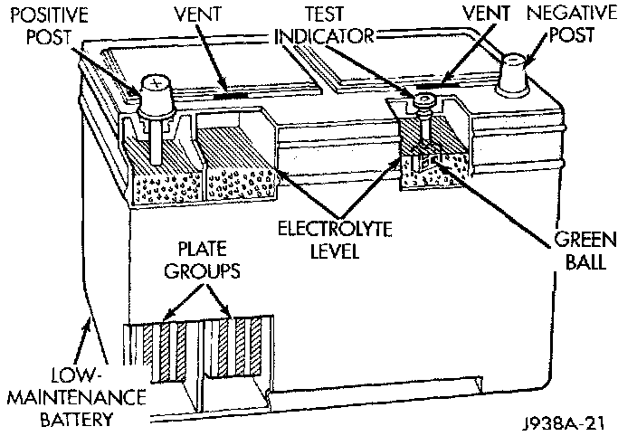

Introduction
This is only battery diagnostic and service procedures.While battery charging can be considered a maintenance procedure, battery charging information is located in this section. This was done because the battery must be fully-charged before any diagnosis can be performed.Low-Maintenance Battery - Typical:

The factory-installed low-maintenance battery has removable battery cell caps. Water can be added to this battery. The battery is not sealed and has vent holes in the cell caps. The chemical composition within the low-maintenance battery reduces battery gassing and water loss, at normal charge and discharge rates.
Rapid loss of electrolyte can be caused by an overcharging condition. Be certain to diagnose the charging system before returning the vehicle to service.
The factory-installed battery in a North American-built vehicle also has a built-in test indicator (hydrometer). The color visible in the sight glass of the indicator will reveal the battery condition. See Built-In Test Indicator for more information. The factory-installed batteries in vehicles built outside of North America do not have a built-in test indicator.
It is important that the battery, starting, and charging systems be thoroughly tested and inspected any time a battery needs to be charged or replaced. The cause of abnormal discharge, overcharging, or early battery failure must be diagnosed and corrected before a battery is replaced or returned to service.
NOTE: This information covers both Left-Hand Drive (LHD) and Right-Hand Drive (RHD) versions of this model. Whenever required and feasible, the RHD versions of affected vehicle components have been constructed as mirror-image of the LHD versions. While most of the illustrations represent only the LHD version, the diagnostic and service procedures outlined can generally be applied to either version. Exceptions to this rule have been clearly identified as LHD or RHD, if a special illustration or procedure is required.